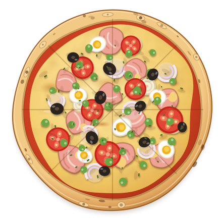

Página de teste
Portuguesa
Grande · borda tradicional
Montador simulado só para testar a cena do forno. Clique no botão para ver a animação.

Grande · borda tradicional
Montador simulado só para testar a cena do forno. Clique no botão para ver a animação.